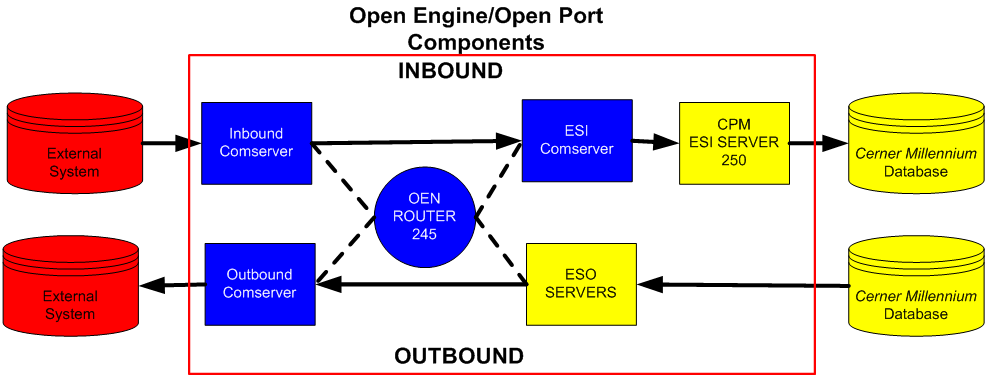

Cerner Architecture
::: Back to top :::

Open Engine comprises the following servers:
- Open Engine Communications Servers (ComServers)
- Communications Protocol is configured within the ComServers
- Responsible for establishing a connection with the foreign system or facilitate a connection to the Cerner Millennium database.
- Transaction formatting is performed within ComServers using custom interface scripts written in CCL
- OEN Router (245)
- Responsible for keeping statistical information for all transactions.
- Maintains OEN_TXLOG. All inbound and outbound messages are written there.
- ESI/ESO Servers
- Provide connectivity to the Cerner Millennium Database for inbound and outbound interfaces.
- ESO servers are also responsible for routing most outbound messages to the appropriate ComServers.
Use DVD to write and run queries against the database.
To run a query, place the cursor over the query and press ctrl+q.
To view and select available tables, switch to the Tables/Fields tab and click on the drop down menu.
Write Queries

View/Select Tables

In Discern Visual Developer, open the Query Builder (Tools -> Query Builder).
In the Query Builder, there are a few useful ways to extract information:
- The Tables tab
- The Glossary
Use the Tables tab to look at what tables are available for each category.
The most commonly used tables are in the "COMMON" directory.
You can view table properties by right clicking on a table and selecting "properties".
To use the Glossary, first select a table in the Tables tab by double clicking on it.
On the Fields tab, a list of fields will be included.
Click on Glossary on this page to view information about the table's fields.
Tables Tab

Glossary

OpenView allows you to:
- Create, start, and stop servers.
- Create and apply route scripts.
Manage Servers
To manage servers, go to Controllers.
Right click on a server to start, stop, or configure it.
To configure a server, right click on a server and select Process Config.
In Process Config you can:
- Set up the servers that are routed to/from in the Services tab.
- Set scripts in the Formatting tab.
- Set the communication type and the port in the Communications tab. The port is set under Service Specs.
- Set the log level in the Logging tab.

Scripting
To modify scripts, go to Scripting.
- Open an existing script to modify it.
- When finished, make sure to hit include to make it available.
- You can then apply it to existing servers.

SI Manager (Systems Interfaces Manager)
::: Back to top :::
SI Manager allows you to:
- Generate reports.
- View messages in the transaction logs.
- Run a queue trace on a message.
Reports
To run reports go to View Reports.
Select the contributor system and the date/time range.

Logs
Search the logs to view messages by contributor system, date/time, and error type.

Queue Trace
Right click on a message in the logs and select Queue Trace Report to view the queue trace.
TABLEDEF2 and CCLGLOS (View Table Fields and Data Types)
::: Back to top :::
TABLEDEF2 and CCLGLOS allow you to view a table's fields and the field data types.
To use TABLEDEF2:
- Open Discern Visual Developer.
- Go to Build->Run Prompt Program.
- In program to run type: TABLEDEF2
- Click run.
- In DICTIONARY TABLE NAME enter the name of the table you want to view.
- For example, you can enter PERSON to view the fields of the person table.
- Click Execute to view the report.
To use CCLGLOS:
- Open Discern Visual Developer.
- Go to Reports->CCLGLOS.
- Select Table as the data model.
- Enter the name of the table you want to view in the Object Name section.
- For example, you can enter PERSON to view the fields of the person table.
- Click Execute to view the report.
TABLEDEF2 - Accessing the field information


The report

CCLGLOS

The report

The CCLUSERDIR: directory is the default backend directory where all files are placed.
To access the directory:
- Putty into the Cerner backend.
- cd to /cerner/d_yourdomainname/ccluserdir
- Type ls *.prg
*.prg Scripts in CCLUSERDIR on Cert (d_c5088)

There are multiple methods for accomplishing this.
Method 1
The easiest method is probably to use CoreCodeBuilder:
- Go to Advanced Search.
- Select Code Set or Code Value.
- Enter the value and click search.
The code set and its number will be displayed, as well as an expandable list of code values.

Method 2
Use the Tables/Fields tab in DVD:
- Look up the code field in the Tables/Fields tab in DVD.
- Right click on the field in the side pane.
- Select Code Lookup to go directly to the code values.
- Or select Properties on the popup menu to view the code set number.

Method 3
In DVD, go to Tools->Add Code Values, or just press CTRL+1.
- In the window, right click any of the rows and select Code Lookup.
- Click Load Code Sets.
- Search for the Code Set you want, select it, and click Okay.
- A table displaying the code values in the code set will be displayed.


Code for Storing Code Values in Variables
Get the code for MRN from code set 319 and store it in MRN_VAR:
DECLARE MRN_VAR = F8
SET MRN_VAR = UAR_GET_CODE_BY("MEANING",319 , "MRN")
Then you can use it in qualifications:
EA.ENCNTR_ALIAS_TYPE_CD = MRN_VAR
Get the Display Value for a Code
Get the display for the encounter alias type code:
SELECT INTO $OUTDEV
E_MED_SERVICE_DISP = UAR_GET_CODE_DISPLAY(E.MED_SERVICE_CD)
FROM ENCOUNTER E
WITH MAXREC = 100, FORMAT, SEPARATOR = " "
Code for Viewing Code Values
For finding code values in queries given only the CDF meaning, this adhoc query finds the code value associated with "MALE" in code set 57:
DECLARE MALE_VAR = F8 WITH
CONSTANT(UAR_GET_CODE_BY("MEANING",57,"MALE")),PROTECT go
CALL ECHO(MALE_VAR) GO
To view the results of the echo() go to View->Listing.
Use this query in Discern Visual Developer to retrieve Contributor Source aliases.
You can look up the Contributor Source Code in CoreCodeBuilder.
SELECT
CV_CONTRIBUTOR_SOURCE_DISP = UAR_GET_CODE_DISPLAY(CV.CONTRIBUTOR_SOURCE_CD)
, CV.ALIAS
, CV.CODE_SET
, CV.CODE_VALUE
FROM
CODE_VALUE_ALIAS CV
WHERE CV.CONTRIBUTOR_SOURCE_CD = 19769808
GROUP BY
CV.CODE_SET
, CV.CONTRIBUTOR_SOURCE_CD
, CV.ALIAS
, CV.CODE_VALUE
WITH NOCOUNTER, SEPARATOR=" ", FORMAT, MAXREC = 1000
How certain information is logged in the Cerner backend.
Also, a list of directories where log files are stored.
Logging Properties
- debuglogging = 0,1,2,3,4 writes to cmb_####_xx.out
- #### = SCP Number, left padded with zeroes
- xx = Instance Number
- audit_flag = 0 (off),1 (creates .dat file),2 (creates .dat and .log files) writes to AUD_xxxxx.dat /.log
- xxxxx = Message Control Id from MSH;10
- logtable_flag = 0 (errors),1 (warnings),2 (successes) writes to ESI_LOG table
VMS/AIX Directories
- CMB_TEMP
- CMB_####_xx.OUT (debuglogging = 0,1,2,3,4)
- CMB_####_xx.ERR
- CER_LOG
- REQLOGHL7.dat (debuglogging = 1, 2, 3)
- script name.dat (debuglogging = 4)
- AUD_xxxxx.dat (audit_flag = 1)
- AUD_xxxx.log (audit_flag = 2)
- CCLUSERDIR
- RTLSRV####_xx_nn.log (Startup Script = ESI)
Documentation
::: Back to top :::
| Title |
Description |
Document |
| OpenView Overview |
Overview of OpenView and how to use it to create com servers and troubleshoot problems |
open |
| CCL Script Notes |
A set of notes on CCL scripts. |
open |
| FSI Notes |
General notes on Cerner FSI |
open |
| FSI Overview |
Cerner's Foreign Systems Interfaces overview |
open |
| FSI Workflow Diagram |
Diagrams illustrating data transfer in FSI |
open |
| FSI Functional Checklist |
Overview of tools used with FSI |
open |
| Custom Routing Diagram |
A digram that describes the workflow for custom routes |
open |
| OpenEngine Server Diagrams |
Diagrams and descriptions of the OEN servers |
open |
| FSI Server (SCP 385) |
Description of the FSI server. Includes dependencies, server interactions, and troubleshooting. |
open |
| OEN Controller (SCP 240) |
Description of the interaction between OpenView and OEN Controller. List of available scripts. |
open |
| CPM ESI Server (SCP 250) |
Description of the relationship between com servers and the CPM ESI Server |
open |
| Interface Implementation Procedure |
Cerner's description of proper interface implementation |
open |
{kind=link}